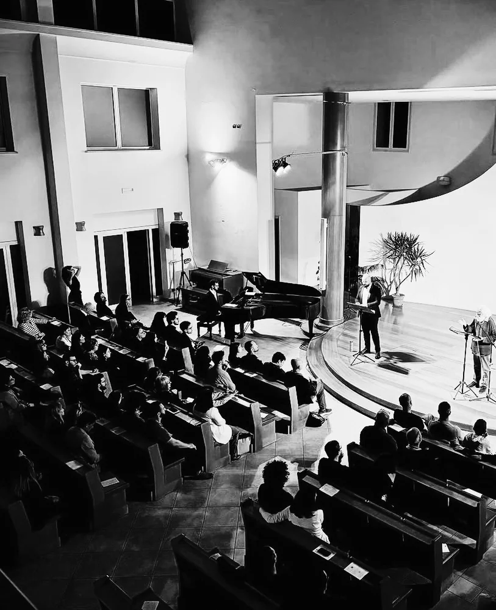
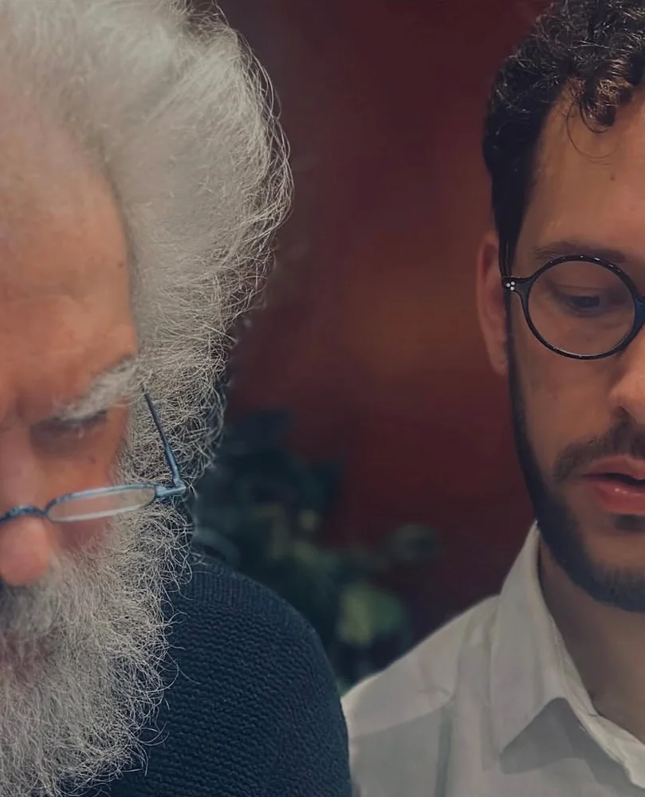
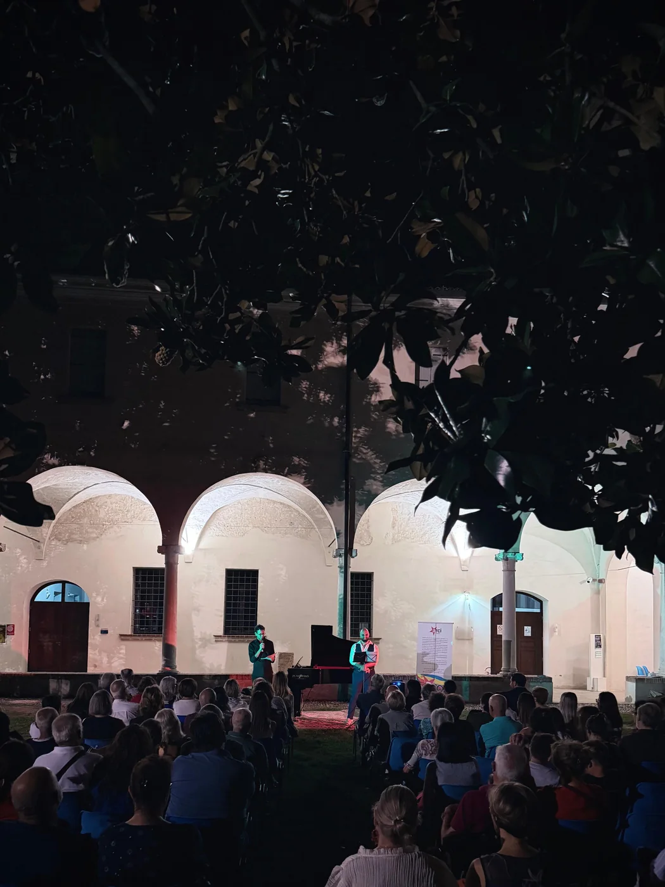

La raccolta
Questa raccolta, composta tra il 2024 e il 2025, nasce dal desiderio di mettere in musica il mondo poetico di Nicola Muschitiello, traendo i suoi versi da varie pubblicazioni tra cui principalmente Lo Strazio (1980-86) e Terra Celeste (1999).
Un senso di urgenza di elevazione spinge l'ascoltatore attraverso i dieci canti tra sospensione, intimità e tensione. L'io cercatore incontra ed attraversa l'esperienza d'amore, ne vive la metamorfosi, per alzare lo sguardo finale verso un Dio invisibile ma ritrovato.
La raccolta è pubblicata da Universal Edition, partner degli eventi creati, e raccontata in un articolo dalla rivista musicale La Decima Sinfonia.




Fotografie: IANUA, 2025.
Un intreccio di voci
La voce poetica si esprime nei versi scritti, ma viene interpretata dal compositore, secondo la lunga tradizione liederistica che da sempre gemella la musica e la poesia, divenendo motore per la parola e permettendo una diversa fruizione dei versi.
La parola diviene canto e, attraverso la lettura dello stesso poeta e l'interpretazione canora del baritenore, Damiano Lombardo, viene riconsegnata al pubblico in una terza forma, assecondando le prassi del canto operistico e liederistico. Il verso si fa vettore, suono, canto, delineando un percorso di raccoglimento collettivo di grande impatto emotivo.
Il pubblico può vivere la reciprocità di uno scambio artistico in atto tra due linguaggi differenti ed attivi nel panorama internazionale. La relazione si fa confronto costante e ricerca di una estetica vicina, raccontando lo sforzo di una produzione poetica e musicale contemporanea nello scenario attuale.
Il racconto del processo di reciproca scoperta e dell'emersione creativa di parola e suono può essere, nel concerto, fattore di scoperta educativa per l'ascoltatore. La sinergia è acuita dalla grande esperienza del poeta in campo musicale, attraverso la produzione di molte opere e spettacoli sincretici con autori internazionali, e dal vivo interesse del compositore in campo poetico, sino anche alla pubblicazione della sua silloge poetica di connessione tra parola e suono Come canta il silenzio (Eretica).
La poesia
Nicola Muschitiello, poeta già riconosciuto come dotato di "una vera voce" (Italo Calvino, 1978), è stato poi definito "personaggio singolarissimo, ultimo dei (veraci) bohemiens nel panorama della letteratura italiana" (Mirella Appiotti, 2001).
Ha contribuito a fondare e animare, con Roberto Roversi e altri poeti, la cooperativa di poesia "Dispacci" (1981-1987). Oltre che di poesia, si occupa di traduzione, e in particolare di letteratura francese, essendo massimo riferimento per Baudelaire. Ha insegnato Traduzione letteraria all'Università di Siena e di Bologna. Ha prestato l'immagine, la voce e le parole al film Morandi nel paese del cuore, realizzato con materiale inedito sul pittore Giorgio Morandi (2004).
È ideatore e voce recitante di concerti di poesia e musica, in collaborazione con insigni interpreti (come Alexander Romanovsky, Roberto Prosseda, Maurizio Baglini, Giovanni Sollima) e con gruppi orchestrali (Orchestra del Teatro dell'Opera di Roma, Solisti Aquilani). Con Decreto del Presidente della Repubblica dell'8 settembre 2020, gli è stato attribuito un vitalizio.



Fotografie: IANUA, 2025.
Il baritenore: Damiano Lombardo
Diplomato brillantemente in Canto lirico, pianoforte e con il massimo dei voti in musica vocale da camera presso il conservatorio "F. Venezze" di Rovigo, amplia il suo background musicale spaziando dalla musica antica fino all'avanguardia più estrema.
Ha lavorato con i più grandi registi e direttori d'orchestra come R. Abbado, R. Muti, M.-W. Chung, J. Conlon, D. Oren, D. Abbado, A. Albanese, S. Poda e F. Zeffirelli. Ha operato sia come solista presso festival musicali sia come artista del coro presso alcune delle più importanti fondazioni teatrali italiane e non solo (Fondazione Arena di Verona, Teatro La Fenice di Venezia, Théâtre de La Monnaie di Bruxelles, Teatro Regio di Torino e Teatro Regio di Parma) anche comparendo nell'edizione 2025 del Festival di Sanremo.
Grazie agli studi svolti e all'innata passione padroneggia con facilità e abilità l'esecuzione di svariati compositori in diversi periodi storici. È inoltre docente di musica presso IC 20 di Bologna.